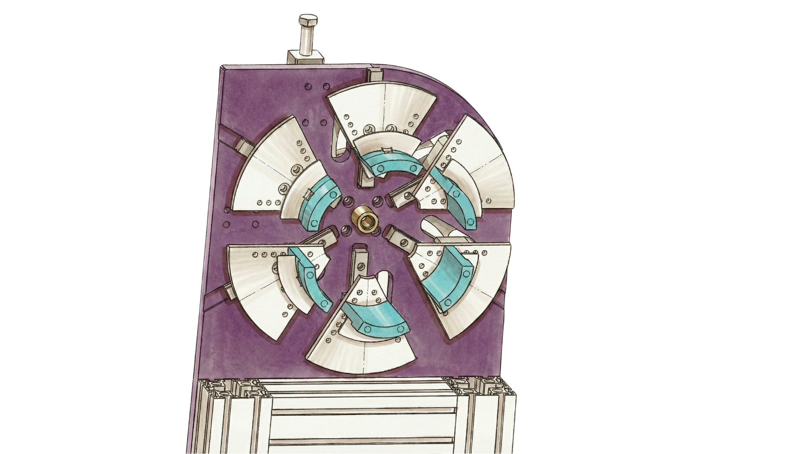

El Reto: Reducción de Tiempos en Montaje
En la fabricación de filtros industriales, el cliente necesitaba ensanchar el cuello de las mangas para insertar un refuerzo o "cuello" más grueso. El proceso actual se realizaba en tres tiempos utilizando útiles manuales, lo que generaba irregularidades en la forma y un cuello de botella en la línea de montaje.
La Solución: Cinemática de Movimiento Único
- Mecanismo de 6 Dientes: Dispone de seis garras que se mueven de forma estrictamente simétrica para ensanchar el material uniformemente.
- Accionamiento Neumático Directo: Funciona mediante un único cilindro neumático. La arquitectura mecánica garantiza la coordinación sin electrónica.
- Ciclo Único: Se pasa de un proceso manual en 3 tiempos a un solo movimiento mecánico instantáneo.
- Simplicidad Operativa: Máxima fiabilidad y mantenimiento mínimo, ideal para entornos de alta producción.

Resultado: Optimización Total del Flujo
La implementación de la ICT49 permitió eliminar la variabilidad humana, garantizando que el 100% de las piezas cumplen con el estándar necesario para el montaje posterior, acelerando drásticamente el ritmo de fabricación.